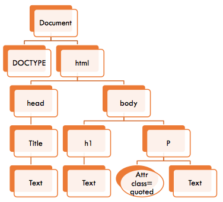
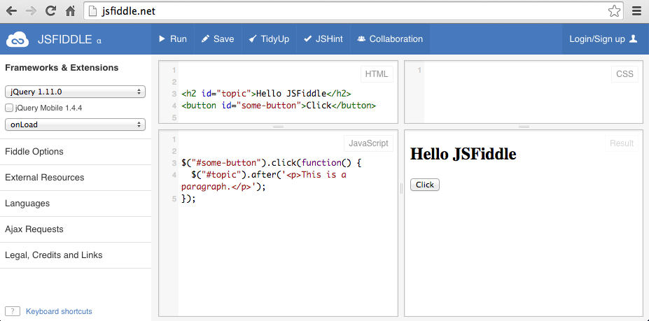

Lassi Haaranen
"The Document Object Model is a platform- and language-neutral interface that will allow programs and scripts to dynamically access and update the content, structure and style of documents." http://www.w3.org/DOM/
The DOM presents documents as a hierarchy (Tree) of Node objects
Some nodes are leaf nodes (without children), such as text inside elements and HTML comments
Other nodes can have child nodes, such as Document (the root element), HTML elements, Attr (Attribute - value pairs)
"The Document Object Model (DOM) is a programming interface for HTML and XML documents. It provides a structured representation of the document and it defines a way that the structure can be accessed from programs so that they can change the document structure, style and content."
See MDN DOM Introduction for more details
<!DOCTYPE html>
<html>
<head>
<title>Example</title>
</head>
<body>
<h1>Heading</h1>
<p class="quoted">Some text</p>
</body>
</html>
"Java is to JavaScript as ham is to a hamster"
–Jeremy Keith
JavaScript is a prototype-based scripting language that is dynamically typed. Despite the name it really does not have anything to do with Java. The syntax it uses resembles that of C.
It is quite flexible, so you can do object-oriented programming, imperative programming, and functional programming. Functions in JavaScript are first-class citizens.
It has some very unfortunate features as well, such as defaulting to global. Methods for dealing with the unfortunate features are discussed at the end.
It is widely popular, not least because it is the scripting language for the web
#1 Mistake with Javascript (according to Crockford) is not bothering to learn the language
It might look like C and have Java in the name, but it is very different language.
There are two ways of getting JavaScript to your page:
script-elementGenerally it is a good idea to move as much as you can of the script to external files.
<script src="my_script.js"></script>
<script>
console.log("Hello console");
alert("Alert");
</script> Actually there is a third way as well... but it is something that should not be used. The curious can Google inline javascript
Variables are declared with var keyword
var lectureTopic = "javascript";Variables do not have types, but their values do. Additionally, the value can be undefined if it is not set.
var lectureTopic = "javascript";
var lecturer;
console.log(lectureTopic); //javascript
console.log(lecturer); //undefined
lecturer = "Lassi";
console.log(lecturer); //Lassivar can be left out completely. But this means that it will be in the global scope. Always use var. Leaving it out will eventually harm you and your users
function addTenStupid(num) {
for(i=0; i < 10; i++) {
num += 1;
}
return num;
}
function addThousandStupid(num) {
for(i=0; i < 100; i++) {
num += addTenStupid(0);
}
return num;
}
console.log(addTenStupid(0)); //will produce 10
console.log(addTenStupid(5)); //will produce 15
console.log(addThousandStupid(1)); //Can you guess what will happen?
Primitive types in JavaScript are immutable (can not be changed after you've created them). They are:
String (e.g. 'Hello', "Hi")Number (e.g. 7, 3.14, 7.5e1)Boolean (true and false)Undefined (e.g. accessing a value that is not set)Null (value that is defined but does not have a value)In addition to primitive types, there is also Object data type which is a collection of properties and is mutable. Object is the basis for many other types, such as:
"Arrays are list-like objects whose prototype has methods to perform traversal and mutation operations. Neither the length of a JavaScript array nor the types of its elements are fixed." MDN Arrays
You access the contents with an index that starts from zero. They have a length property that is equal to the last index of the array + 1.
//initializing array, for empty array just use []
var someNumbers = [0,1,3,9];
console.log( someNumbers.length ); //prints 4
console.log( someNumbers[2] ); //prints 3
// .push adds to the end of array
someNumbers.push(12); // someNumbers is now [0, 1, 3, 9, 12]
someNumbers.length; //5
someNumbers[3] = 6; // someNumbers is now [0, 1, 3, 6, 12]
someNumbers[7] = 99; // [0, 1, 3, 6, 12, undefined, undefined, 99]
someNumbers.length; //8Functions are defined with function keyword and a name (optional) and parameters in parenthesis (also optional) as comma separated list.
Functions are first class citizens in JavaScript.
Method-functions are invoked with dot notation: myObject.doSomething(). Global functions are invoced with the function's name and parameters in parenthesis.
function add(a,b) {
return a + b;
}
function addOne(a) {
return add(a,1);
}
console.log(add(1,3)); //4
console.log(addOne(5)); //6
function add(a,b) {
return a+b;
}
function square(x) {
return x*x;
}
add(1,2); // 3
square(7); // 49
square(add(1,2)); // 9
myNumbers = [0,1,2,3];
//Arrays have a map method
myNumbers.map( square ); //[0, 1, 4, 9]
myNumbers.map(
function foo(x) {
return add(1,x);
}
); //[1, 2, 3, 4]
If function's name is omitted (it's not given one) it is called an anonymous function. These are often used when the name is irrelevant (e.g. in event handling).
var myNumbers = [1,2,3,5];
//Takes a number and returns it squared
var squareNumber = function(num) {
return num*num;
};
var squaredAnon = myNumbers.map(
function(x) { return x*x; } // This function doesn't have a name
); //returns [1,4,9,25]
var squaredNamed = myNumbers.map( squareNumber ); //returns [1,4,9,25]
//prints [1,4,9,25]
squaredAnon.map( function(num) { console.log("This number is: " + num);} );
//prints [1,4,9,25]
squaredNamed.map( function(num) { console.log("This number is: " + num);} );
//prints [1,2,3,5]
myNumbers.map( function(num) {
console.log("This number is: " + num);
});
There is just one number type which simplifies things a lot. Internally it's 64 bit floating point. This causes some behavior that is not desirable:
0.1 + 0.2 === 0.3; //false
var biggestInt = 9007199254740992;
var smallestInt = -9007199254740992;
var expNumber = 7.5e2; //7.5*10^2 i.e. 750
var hexNumber = 0xFF; // 255
Crockford has proposed a new number type to solve this.
Following arithmetic operations are defined for numbers:
+ Addition- Subtraction/ Division* Multiplication% Remainder (there is no modulo)++ Increment-- Decrement- Unary negation+ Unary plusStrings are enclosed with single or double quotes and consist of 0-N characters:
var text = 'This is fine.';
var anotherText = "And so is this.";Characters can be escaped with backslash:
var someQuote = "He said: \"It's a fine day\".";
console.log(someQuote); //prints: He said: "It's a fine day".They have a number of useful methods and a length property:
var someText = 'This is my text';
someText.length; //15
someText.split(' '); //Split by space, produces: ["This", "is", "my", "text"]
someText.toUpperCase(); //"THIS IS MY TEXT"Booleans in JavaScript are true and false
There is also a notion of truthy/falsy values when using == comparison.
Falsy values are: false, 0, -0, '', "", null, undefined, NaN
Everything else is truthy: e.g. ' ', "false", {} (empty object)
Instead of using == as comparator you should use ===. Otherwise you might run into unexpected problems. Check out Equality table for == comparison.
EcmaScript5 Annotated Spec - 11.9.3 The Abstract Equality Comparison Algorithm
Incomplete list from highest to lowest precedence
(...) grouping. [] member access... (...) function call! (negation) typeof delete * / % multiplication, division, remainder+ - addition and subtraction&& || ?: logical and/or, ternary conditional= += *= etc. assignmentsSome operators are used for multiple operator types which can be confusing. For example, + can mean addition, concatenation or unary plus.
if...else Statement (can also have optional else if branches):
if(myVariable === 7) {
console.log("It is seven!");
} else { //Else could also be completely omitted
console.log("It is NOT seven!");
}switch Statement
switch (someVariable) {
case 7:
console.log("It's seven");
break;
case 6:
console.log("It's six");
break;
default:
console.log("It's something other than 6 or 7");
}JavaScript has while and do ... while statements
/* This will just keep printing 'Still doing stuff' until
keepDoingStuff is set to false */
// shorter way of expressing while(keepDoingStuff === true)
while(keepDoingStuff) {
console.log("Still doing stuff");
// ... actually do something
}For loops come in three varities for, for in, and for each. Example of 'normal' for statement:
var myArray = [0,1,4];
for (var i = 0; i < myArray.length; i++) {
console.log("Number: " + myArray[i]);
}Be cautious of for in loops, they might not loop in the way you expect.
Single line comments are inserted with // :
//this is a comment
var foo = 7; //setting foo to 7Multiline comments start with /* and end with */:
/*
This function takes two numbers
and returns the sum of them
*/
function add(a,b) {
return a+b; // this line does all the work
}Objects are containers for properties where properties have a name and a value.
Property names are strings and the values can be anything.
var person = { 'name': 'Bill', 'age': 50};
var anotherPerson = {
'name': 'Mary',
'age': 51
};
person.favoriteColor = 'blue';
/* Now person is an object with following properties:
{ name: "Bill",
age: 50,
favoriteColor: "blue"} */
//bracket notation is also possible
console.log( anotherPerson["name"] ); // will print Mary
console.log( anotherPerson["favoriteColor"] ); // will print undefined
delete anotherPerson.age; //removing a property
console.log( anotherPerson ); //prints: Object {name: "Mary"}Setting a property to a function will create a method for that object. Accessing the object inside a method is done by this keyword.
var person = { 'name': 'Bill', 'age': 50};
//We set the greet property to a function
person.greet = function (greeting) {
console.log(greeting + "! My name is " + this.name);
};
person.greet("Hello"); //prints: Hello! My name is Bill
person.greet("Hi"); //prints: Hi! My name is Bill
var anotherPerson = { 'name' : 'Mary', 'age': 51 };
anotherPerson.greet = person.greet;
anotherPerson.greet('Good day!'); //prints: Good day!! My name is MaryJSON stands for JavaScript Object Notation. It has two structures (taken from json.org:
object, record, struct, dictionary, hash table, keyed list, or
associative array.array,vector, list, or sequence.{
"artist":"U2",
"timestamp":"2011-09-07 21:14:02.102805",
"similars":[ ],
"tags":[
[ "rock", "100"],
[ "U2", "100" ],
[ "u 2","100" ]
],
"track_id":"TRAATMY128F149562F",
"title":"Kite Live from Sydney"
}
JavaScript has a function scope which means that any variable declared with var inside a function will visible to that function and any inner function. Any variable declared inside a block will be visible everywhere within the function that holds the block.
function foo(x) {
var xPlusOne = x + 1;
function bar(y) {
console.log(x);
console.log(xPlusOne);
console.log(y);
}
bar(xPlusOne + x);
}
foo(7); //Will result in printing 7, 8, and 15Block-scoping is coming in the next standard MDN - Let keyword
JavaScript is an implementation of ECMAScript which is the official specification. Different versions of this spefication has been released, the latest being the fifth edition.
The latest specification added a strict mode. It is more restricted than the normal mode, a subset of JavaScript where some features which are known to cause problems are removed. For example, some things which fail silently will throw an error.
function noStrict() {
message = "This is a bad idea";
}
function strict() {
"use strict";
message = "This will throw an error";
}
strict(); //will throw ReferenceError
noStrict(); //works
// Calling these functions in reverse order will work,
// since message will get bound to global scope
thisthis is a keyword that refers to the current execution context. When it is used in the global scope it refers to the global object. Inside functions it behaves differently depending on whether strict mode is used. Inside a method function it refers to the object on which it is called.
Good overview on what this can refer to on MDN
Document Object Model, or DOM for short, is the way we can access and manipulate HTML with JavaScript. Generally it is a pain to work with, which is why we use JavaScript libraries to make it tolerable. But before libraries let's take a look what it's like in "plain" JavaScript:
//get the element with id js_dom_h2
document.getElementById('js_dom_h2').innerHTML = 'DOM is not nice';
//create a new element
var newElement = document.createElement('small');
//set the content of the new element
newElement.innerHTML = 'But you learn to live with it';
//put the element inside the <h2> of the page
document.getElementById('js_dom_h2').appendChild(newElement);
What makes manipulating DOM directly particularly painful is that there are browser specific differences. Libraries handle these differences so you do not need to worry about them and you can focus on the real problem that you are solving at the moment.
We will use jQuery, make sure you glance through the API documentation
One of the most popular libraries is called jQuery - "write less, do more". Last slide's example written with using jQuery looks like this:
$("#specialButton").click( function(event) {
alert("Someone clicked the special button!");
});jQuery (often used just as $ on the code) is based on selecting HTML elements with CSS selectors and manipulating them. In addition to just selecting elements, jQuery provides many convenient functions for manipulating those elements (and more).
Most of what you end up doing with JavaScript in the browser is event-driven. What this means, is that when something happens you have some code that activates.
There are many events to which you can respond. Some examples are:
Do check out MDN - Events to see a long list of events that might be happening on a web page.
The way we handle these events is by attaching event handlers to elements (including the document itself)
document.getElementById('specialButton').onclick = function (event) {
alert("Someone clicked the special button!");
}In this example an anonymous function is added to the element that has the id of specialButton. The anonymous function gets executed when the specified event (onclick) happens and it will display an alert.
What's a foot-gun? It's a device that's really powerful, but apparently only designed for the purpose of shooting your own foot. And JavaScript has a fair share those.
ASI, or Automatic Semicolon Insertion, is the mechanism by which missing semicolons are inserted. It was meant to help novice developers but in practise it does not work. Always insert a semicolon at the end of statement.
Similarly, the use of global namespace by default can lead to hard-to-detect problems which is why var should always be used.
To assist dealing with these foot-guns and other features which might cause more harm than good, different tools are available.
JSLint - "Warning: JSLint will hurt your feelings."
JSHint - "JSHint is a program that flags suspicious usage in programs written in JavaScript."
Incorporating tools such as JSLint or JSHint in to your workflow will make your life easier in the long run. There exists a plethora of solutions how to run these automatically, for instance, when you save a .js file in your editor.
There are many useful tools available online, one of them is JSFiddle which allows you to test things in the browser with HTML, CSS, and JavaScript. It also comes with libraries that you can use and try out. Example code
